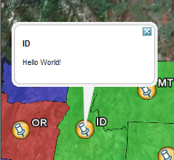
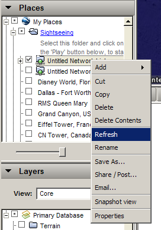

KML Placemark Templates¶
Introduction¶
KML은 맵 상의 위치를 표시하기 위해 “위치표시(placemark)”를 사용하는데, 주로 노랑 압정으로 시각화합니다. 위치표시에 해당 위치에 대한 정보인 “설명(description)”을 연결할 수 있습니다. 위치표시 설명은 단순한 HTML 조각에 불과하며 원하는 것은 뭐든지 표출할 수 있습니다.
GeoServer는 기본적으로 데이터셋의 특정 피처에 쓰일 수 있는 모든 속성을 설명하는 HTML 표를 위치표시 설명으로 생성합니다. 다음은 아이다호(Idaho) 주를 표현하는 피처에 대한 위치표시 설명을 보여주는 그림입니다.
기본 위치표시 설명
이것만으로도 훌륭하지만, 이 설명을 통해 다른 종류의 정보를 전달하고자 하는 경우 어떻게 해야 할까요. 또는 데이터셋의 모든 속성을 전부 보여주면 안 될 경우에는 어떻게 해야 할까요. 템플릿을 이용하면 됩니다!
템플릿은 어떤 종류의 산출물을 생성하는 데 딱이니 말입니다.
Getting Started¶
먼저 환경을 설정하십시오. 이 예제를 마치려면 다음 응용 프로그램이 필요합니다.
- GeoServer 설치
- 텍스트 편집기
이게 다입니다. 이 예제는 GeoServer가 기본 설치 시와 동일한 (데이터 디렉터리) 설정으로 운영되고 있다고 가정합니다.
Hello World¶
그러면 첫번째 템플릿을 생성해보겠습니다. 벌써 짐작했겠지만 “Hello World!”라는 위치표시 설명을 생성하는 아주 단순한 템플릿부터 시작하겠습니다.
사용자가 쓰고 싶은 텍스트 편집기로 description.ftl이라는 새로운 파일을 생성하십시오.
다음 내용을 파일에 추가합니다.
Hello World!
파일을 사용자 데이터 디렉터리의 workspaces/topp/states_shapefile/states 디렉터리에 저장합니다. 모든 GeoServer 설정 파일이 데이터 디렉터리에 있습니다. 일반적으로 환경 변수 GEOSERVER_DATA_DIR가 데이터 디렉터리를 가리킵니다.
(실행중이 아니라면) GeoServer를 시작하십시오.
끝났습니다. 이제 Google 어스에 다음 네트워크 링크를 추가해서 이 템플릿을 테스트해볼 수 있습니다.
http://localhost:8080/geoserver/wms/kml?layers=states
이 첫번째 템플릿이 다음과 같이 표출될 것입니다.
Hello World! 템플릿
템플릿 새로고침: 템플릿의 장점 가운데 하나는 모든 요청을 받아들인다는 점입니다. 따라서 그냥 그 자리에서 템플릿을 편집한 다음 파일을 저장하자마자 Geoserver가 변경된 내용을 인식하게 할 수 있습니다. 또 템플릿을 편집하고 저장한 다음 Google 어스 안에서 네트워크 링크를 “새로고침(Refresh)”하기만 하면 새로운 내용을 표출합니다.
템플릿 새로고침
앞서 말했듯이 템플릿 설명은 HTML일 뿐입니다. description.ftl 파일을 가지고 사용자 스스로 HTML을 추가해보십시오. 다음 예시들을 시험해보는 것도 좋습니다.
사용자 회사/조직의 홈페이지로 연결되는 간단한 링크
Provided by the <a href="http://topp.openplans.org">The Open Planning Project</a>.
TOPP 홈페이지
사용자 회사/조직의 로고
<img src="http://topp.openplans.org/images/logo.jpg"/>

TOPP 로고
가능성은 무궁무진합니다. 그러나 이 예시들이 훌륭하긴 하지만 그 내용이 정적(static)이라는 점에서 약간 부족한 면이 있습니다. 다음 섹션에서 실제로 데이터셋의 몇몇 속성에 접근하는 좀 더 실질적인 템플릿을 생성해보겠습니다.
Data Content¶
템플릿의 진짜 강점은 콘텐츠에 쉽게 접근할 수 있는 기능으로, 피처의 경우 피처 속성이 콘텐츠가 됩니다. KML 위치표시 설명 템플릿에서 다음과 같은 여러 가지 “템플릿 변수(template variable)”를 사용할 수 있습니다.
- “fid” 변수 —피처 ID와 연결됩니다.
- “typeName” 변수 —피처형의 명칭과 연결됩니다.
- 피처 속성과 연결되는 변수들의 배열 —각각 해당 속성명의 명칭을 부여받습니다.
이 내용을 잘 기억하고 다음 예시들을 실행해보겠습니다.
단순한 fid/typename 접근:
This is feature ${fid} of type ${typeName}.
states 피처형에 속한, 피처 ID가 states.31인 피처의 설명이 다음과 같이 표출됩니다.

피처 ID
STATE_NAME과 PERSONS라는 2개 속성의 값에 접근:
This is ${STATE_NAME.value} state which has a population of ${PERSONS.value}.
STATE_NAME 속성값이 Idaho인 피처의 PERSONS 속성값은 1.006.749입니다.
속성
Attribute Variables¶
“복잡 오브젝트(complex object)”의 피처 속성은 다음 3개의 부분으로 이루어져 있습니다.
- value —직접 이용할 수 있는 실제 속성값을 대표하는 기본 문자열입니다.
- rawValue —좀 더 특별하게 사용자 지정할 수 있는 실제 속성값입니다. (예를 들면 불 값(boolean)을 가지는 속성에 대한 사용자 지정 표현인 ${attribute.value?string("Enabled", "Disabled")} 등)
- type —각각 ${<attribute_name>.name}, ${<attribute_name>.value}, ${<attribute_name>.rawValue}, ${<attribute_name>.type}을 통해 접근할 수 있습니다. 다른 변수로는 “fid”, “typeName”, 그리고 직접 사용할 수 있는 “단순 오브젝트(simple object)”가 있습니다.
WMS Demo Example¶
마지막으로 GeoServer에 기본 포함된 “WMS Example” 데모를 기본으로 하는 예시입니다. 이 데모를 보고 싶다면 웹 브라우저에서 http://localhost:8080/geoserver/popup_map/index.html 주소로 접속하십시오.
맵 상의 어떤 포인트 위에 마우스 커서를 가져가면 해당 포인트에 지정된 이미지가 표출되는 것을 볼 수 있습니다. KML 위치표시 설명 템플릿으로 이 기능을 복제해보겠습니다.
GeoServer 데이터 디렉터리의 featureTypes/DS_poi_poi 디렉터리 안에 다음 템플릿을 생성하십시오.
<img src="http://localhost:8080/geoserver/popup_map/${THUMBNAIL.value}"/>Google 어스에 다음 네트워크 링크를 추가하십시오.
http://localhost:8080/geoserver/wms/kml?layers=tiger:poi
WMS 예시